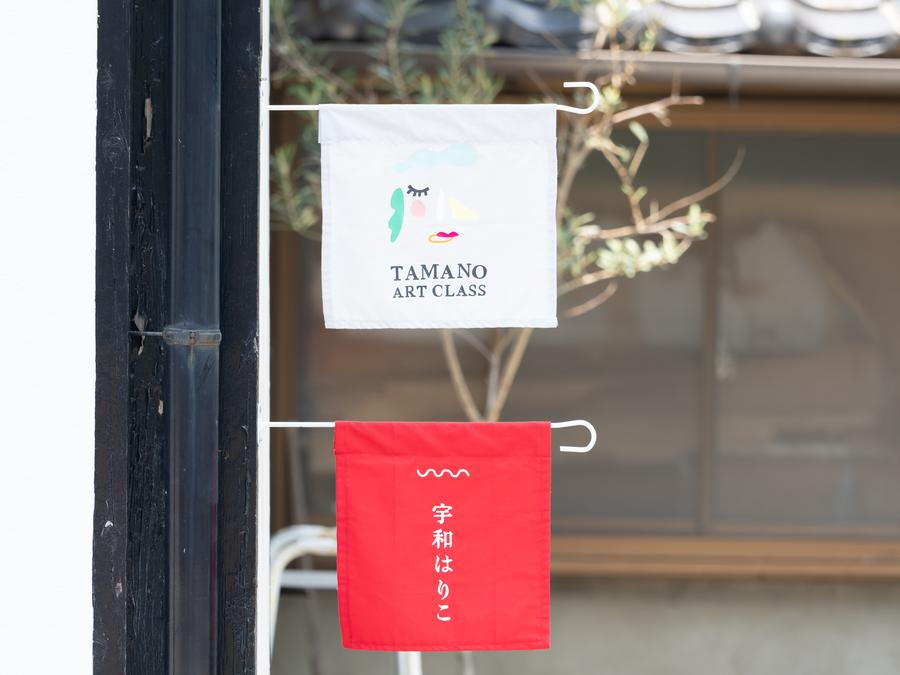
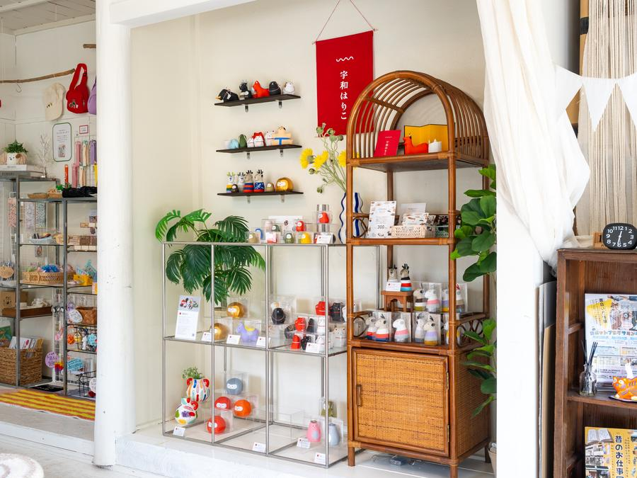
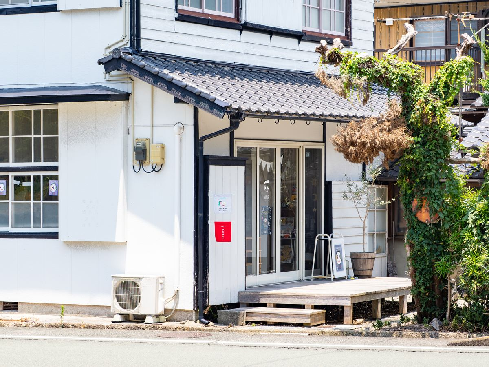

Story
宇和はりこは、愛媛県西予市宇和町のはりこ工房。山里の静かな空気の中で、ひとつひとつ丁寧に張子をつくっています。
素朴でかわいらしいフォルムの動物たちが、その土地の記憶と人の祈りを宿して、生まれ続けています。

Deer Dance
宇和はりこの代表作の鹿は、南予地方に江戸時代から伝わる鹿踊りがモデルです。鹿の面をかぶった踊り手たちが五穀豊穣を祈り舞うこの伝統芸能は、場所によって５、６、８など鹿の数が変わります。
地元の祭りで鹿踊りと出会い、その力強くもどこかかわいらしい姿を張子で残したいと思ったのが、宇和はりこのはじまりでした。鹿は、工房がはじめてつくった作品です。
手のひらに収まるサイズで、棚や窓辺にそっと置いてみると、南予の山里から続く祈りが、日々の暮らしの中にひっそりと宿るような気がします。

Info
| 住所 | 〒797-0015 愛媛県西予市宇和町卯之町3丁目423 |
|---|---|
| @uwa_hariko | |
| ワークショップ | イベントの際はお知らせにて告知いたします |
| メール | uwahariko@gmail.com |
